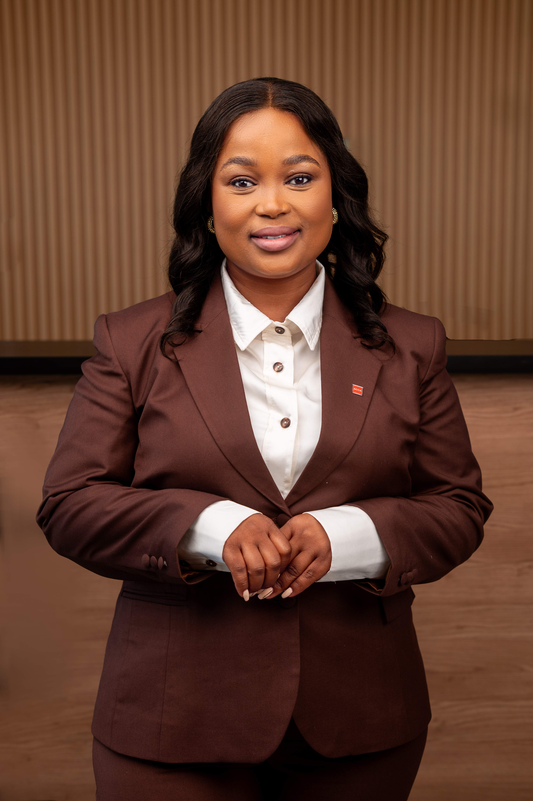
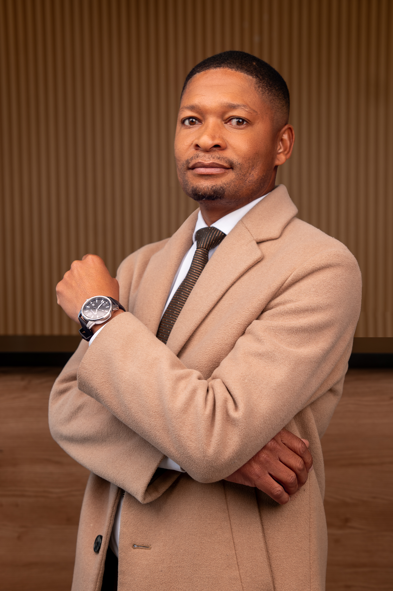
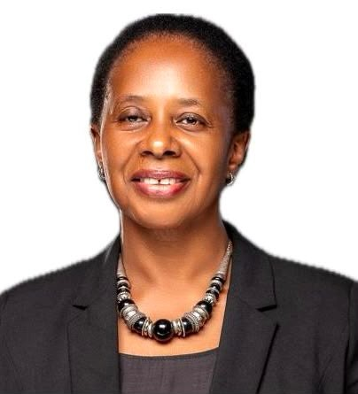
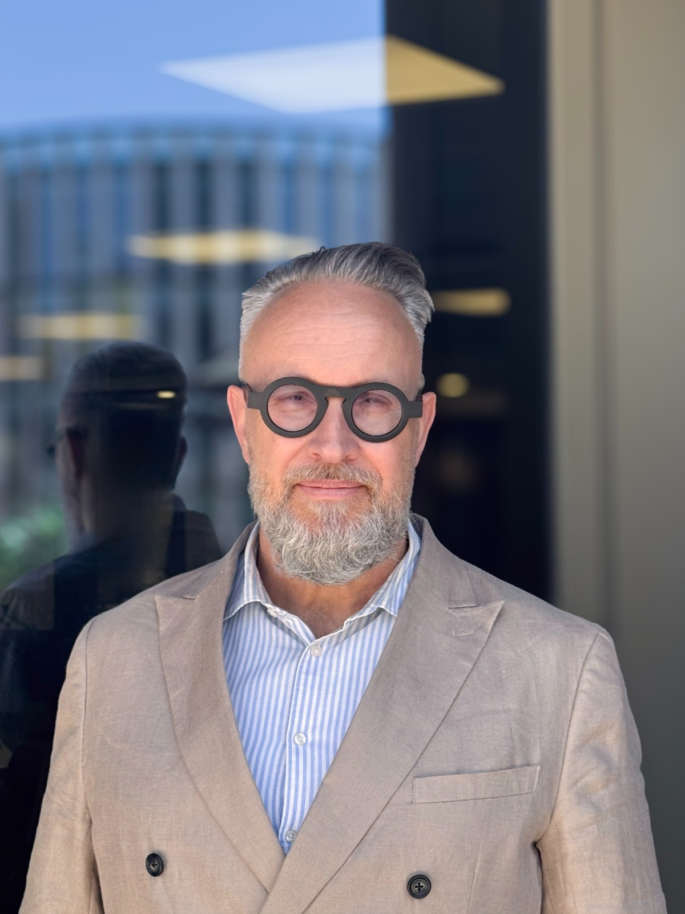

Our multidisciplinary team combines investment expertise, financial discipline, operational excellence, compliance, risk management and a commitment to responsible investing. Together, we work collaboratively to create sustainable value for investors, portfolio companies and communities.
B. Applied Finance
MSc Finance
FMVA
PGP-Data Science & Business Analytics
+18 years' experience spanning asset management, private equity, private debt, and development finance, Ms. Refilwe Sebego-Walebowa provides strategic leadership as the Managing Director. She is responsible for shaping the firm's strategic direction, overall overseeing of investments execution and portfolio performance, governance, and driving long-term sustainable growth.
Prior to co-founding Mmathari Partners, Refilwe served as an Associate Partner at a private equity firm. Her earlier career includes senior investment roles at Botswana Development Corporation - Botswana's premier development finance institution; Norsad Capital - a leading sub-Saharan African impact investor and private credit provider; and Botswana Insurance Fund Management - one of Botswana's largest institutional asset managers.
Throughout her career, Refilwe has originated, evaluated, structured, and executed investment transactions across multiple sectors throughout the Southern African Development Community (SADC), working with businesses at various stages of growth and contributing to regional economic development.
She brings extensive board and corporate governance experience having served on boards across the reinsurance, healthcare, education, and life insurance sectors. She currently serves as the Chairperson of the bord of Liberty Life Botswana, where she provides strategic oversight and governance leadership.
Refilwe holds a Bachelor of Applied Finance from Macquarie University, Australia, MSc Finance from Warwick Business School, UK, Financial Modeling & Valuation Analysis from Corporate Finance Institute, Canada and a Post Graduate Program in Data Science and Business Analytics from McCombs Business School, the University of Texas at Austin, USA.

Bachelor of Finance
CFA Charterholder
Mezzanine Finance
Ms. Keboetswe Letsholo oversees the investment team and leads the implementation of the Firm’s investment strategy. She is responsible for sourcing, evaluating, executing, and monitoring investment opportunities, bringing more than 10 years of end-to-end investment management experience across the Africa region.
Prior to co-founding Mmathari, Ms Letsholo served as an Associate Regional Representative at US-based impact fund manager Developing World Markets (DWM), where she was responsible for investments across Africa and the Middle East. Before joining DWM, she held investment management roles at Norsad Capital, focusing on the structuring and deployment of private debt transactions throughout Sub-Saharan Africa. She has structured and managed debt, mezzanine and quasi-equity investments across all stages of the investment cycle. Her experience spans a diverse range of sectors and business maturities, from early-stage start-ups to mature businesses.
Ms Letsholo holds a Bachelor of Finance degree (first class) from the University of Botswana and is a CFA Charterholder.

Association of Chartered Certified
Association of Accounting Technicians
+13 years' experience as a Chartered Accountant with expertise in financial reporting, financial management and transaction advisory services, Ms. Kenaleone Noko is tasked with overseeing financial management, operational efficiency and administrative tasks of both the company and the Fund.
Having worked in both the Accounting and Advisory divisions of Grant Thornton, Kenaleone combines technical accounting expertise with strong analytical and valuation skills, enabling data-driven investment insights.
She has participated in multiple due diligence, business valuation and M&A advisory engagements, gaining a deep understanding of business performance analysis and risk assessment.
Kenaleone holds is a Chartered Accountant acquired through Association of Chartered Certified Accountants (ACCA), UK and Association of Accounting Technicians (AAT), UK and Botswana Accountancy College, Botswana.
Bachelor of Finance (University of Botswana)
CFA Charterholder (CFA Institute, USA)
Mezzanine Finance (International Faculty of Finance, UK).
Ms. Keboetswe Letsholo oversees the investment team and leads the implementation of the Firm’s investment strategy. She is responsible for sourcing, evaluating, executing, and monitoring investment opportunities, bringing more than 10 years of end-to-end investment management experience across the Africa region.
Prior to co-founding Mmathari, Ms Letsholo served as an Associate Regional Representative at US-based impact fund manager Developing World Markets (DWM), where she was responsible for investments across Africa and the Middle East. Before joining DWM, she held investment management roles at Norsad Capital, focusing on the structuring and deployment of private debt transactions throughout Sub-Saharan Africa. She has structured and managed debt, mezzanine and quasi-equity investments across all stages of the investment cycle. Her experience spans a diverse range of sectors and business maturities, from early-stage start-ups to mature businesses.
Ms Letsholo holds a Bachelor of Finance degree (first class) from the University of Botswana and is a CFA Charterholder.
B. Applied Finance (Macquarie University,
Australia)
MSc Finance (Warwick Business
School, UK)
Financial Modeling & Valuation Analysis (FMVA, Corporate Finance Institute, Canada)
Post Graduate Program in Data Science and Business Analytics (PGP-DBSA, McCombs Business School, The University of Texas at Austin, USA).
+18 years' experience spanning asset management, private equity, private debt, and development finance, Ms. Refilwe Sebego-Walebowa provides strategic leadership as the Managing Director. She is responsible for shaping the firm's strategic direction, overall overseeing of investments execution and portfolio performance, governance, and driving long-term sustainable growth.
Prior to co-founding Mmathari Partners, Refilwe served as an Associate Partner at a private equity firm. Her earlier career includes senior investment roles at Botswana Development Corporation - Botswana's premier development finance institution; Norsad Capital - a leading sub-Saharan African impact investor and private credit provider; and Botswana Insurance Fund Management - one of Botswana's largest institutional asset managers.
Throughout her career, Refilwe has originated, evaluated, structured, and executed investment transactions across multiple sectors throughout the Southern African Development Community (SADC), working with businesses at various stages of growth and contributing to regional economic development.
She brings extensive board and corporate governance experience having served on boards across the reinsurance, healthcare, education, and life insurance sectors. She currently serves as the Chairperson of the bord of Liberty Life Botswana, where she provides strategic oversight and governance leadership.
Bachelor of Science,
Mathematics of Finance
(University of Botswana)
CFA Level II Candidate
(CFA Institute, USA).
Mr Phemo Kgosi is dynamic early-career investment analyst at Mmathari Partners, where he supports the full private equity investment lifecycle, including deal screening, financial modeling, market research, due diligence, transaction execution, and portfolio management - contributing to informed investment decisions making.
Prior to joining Mmathari Partners, Phemo interned at Alpha Direct Insurance Company, this experience provided him with a strong foundation in data analytics and demonstrated the role of data driven insights in supporting strategic decision making across business functions.
Phemo holds a Bachelor of Science in Mathematics of Finance from the University of Botswana. He is currently pursuing the Chartered Financial Analyst (CFA) designation and has successfully completed CFA Level I, reflecting his commitment to professional development and excellence in investment analysis and finance and demonstrates strong proficiency in investment research, financial analysis and valuation.
Bachelor of Science,
Mathematics of Finance
(University of Botswana)
Certified Basel III Professional
(CBiiiPro).
Dynamic early-career investment analyst with a Bachelor of Science in Mathematics of Finance from the University of Botswana and Certified Basel III Professional (CBiiiPro).
He has experience in credit portfolio analysis, having previously worked for a reputable credit financier.
Association of Chartered Certified
Accountants (ACCA, UK and Botswana Accountancy College, Botswana)
Association of Accounting Technicians
(AAT, UK and Botswana Accountancy College, Botswana).
+13 years' experience as a Chartered Accountant with expertise in financial reporting, financial management and transaction advisory services, Ms. Kenaleone Noko is tasked with overseeing financial management, operational efficiency and administrative tasks of both the company and the Fund.
Having worked in both the Accounting and Advisory divisions of Grant Thornton, Kenaleone combines technical accounting expertise with strong analytical and valuation skills, enabling data-driven investment insights.
She has participated in multiple due diligence, business valuation and M&A advisory engagements, gaining a deep understanding of business performance analysis and risk assessment.
Bachelor of Business (Honours) in Tourism Management (Limkokwing University of Creative Technology, Botswana).
+13 years' experience in office administration and customer service across financial services, hospitality and related industries.
Ms. Tebogo Bakgakgodi previously worked for Norsad Capital, providing administrative support, and also served as Reception Manager at Lansmore Masa Hotel.

Bachelor of Arts in Finance
(University of Botswana)
MBA Dissertation Candidate
(Quantic School of Business &
Technology)
Final Level CIMA (UK).
+10 years' progressive experience spanning compliance, risk management, internal and external audit, corporate governance, and anti-money laundering within Botswana's financial services sector.
Mr. Boago Obotsang's career began at PricewaterhouseCoopers (PwC) before progressing into senior internal audit leadership roles serving as Audit Manager at the Botswana Investment and Trade Centre (BITC) and later as Group Risk Lead at Thito Holdings.
His experience combines technical audit expertise with strategic business insight, contributing meaningfully to sustainable organisational growth.
Boago holds a Bachelor's degree in Finance, is two examinations away from completing the CIMA qualification, and is currently pursuing an Executive MBA (EMBA) with Quantic School of Business and Technology.
Bachelor of Arts in Environmental
Science (University of Botswana, Botswana)
Professional certifications in ESG,
sustainability, climate-related
disclosures and sustainable finance.
Over 4 years' progressive experience in sustainability compliance, environmental auditing and ESG risk assessment across multiple sectors.
Extensive knowledge of Botswana's environmental regulatory framework and international sustainability standards including GRI, SASB and TCFD.
The Board of Directors provides strategic leadership, independent oversight and sound corporate governance to ensure Mmathari Partners achieves sustainable growth while maintaining the highest standards of integrity, accountability and responsible investment.
The Board of Directors is committed to maintaining the highest standards of corporate governance, ethical leadership and accountability. Through prudent oversight and strategic guidance, the Board supports Mmathari Partners in delivering sustainable financial performance, measurable impact and enduring value for investors, portfolio companies and the communities in which we operate.
Master of Tax Law (University of Sydney, Australia)
Bachelor of Commerce - Accounting (University of Botswana, Botswana)
BURS Leadership Development Programme (University of Stellenbosch Business School, South Africa)
HM Revenue and Customs Senior Leadership Programme (Commonwealth Association of Tax Administrators (CATA), UK).
Mr Tutu Bakwena is an accomplished tax policy practitioner and private consultant with extensive public-sector, regional, and international experience. He brings over 30 years’ experience in tax administration, policy development, and legislative advisory work, including senior leadership at the Botswana Unified Revenue Service (BURS), where he rose to Commissioner, Domestic Taxes, until his departure in 2023.
Mr Bakwena's regional and international roles include programme officer for tax coordination at the Southern African Development Community (SADC) and Executive Director of the Commonwealth Association of Tax Administrators (CATA) in London, UK.
Mr Bakwena has extensive leadership and board experience, having interacted extensively with executives, bureaucrats and political heads of various institutions and served on the boards of Statistics Botswana and the IFSC Certification Committee, while also contributing to technical working committees at SADC, ATAF and the OECD.
Mr Bakwena holds a Bachelor of Commerce (Accounting) from the University of Botswana and a Master’s degree in Tax Law from the University of Sydney. Throughout his career, he has undertaken various developmental programmes.

B. Applied Finance (Macquarie University,
Australia)
MSc Finance (Warwick Business
School, UK)
Financial Modeling & Valuation Analysis (FMVA, Corporate Finance Institute, Canada)
Post Graduate Program in Data Science and Business Analytics (PGP-DBSA, McCombs Business School, The University of Texas at Austin, USA).
+18 years' experience spanning asset management, private equity, private debt, and development finance, Ms. Refilwe Sebego-Walebowa provides strategic leadership as the Managing Director. She is responsible for shaping the firm's strategic direction, overall overseeing of investments execution and portfolio performance, governance, and driving long-term sustainable growth.
Prior to co-founding Mmathari Partners, Refilwe served as an Associate Partner at a private equity firm. Her earlier career includes senior investment roles at Botswana Development Corporation - Botswana's premier development finance institution; Norsad Capital - a leading sub-Saharan African impact investor and private credit provider; and Botswana Insurance Fund Management - one of Botswana's largest institutional asset managers.
Throughout her career, Refilwe has originated, evaluated, structured, and executed investment transactions across multiple sectors throughout the Southern African Development Community (SADC), working with businesses at various stages of growth and contributing to regional economic development.
She brings extensive board and corporate governance experience having served on boards across the reinsurance, healthcare, education, and life insurance sectors. She currently serves as the Chairperson of the bord of Liberty Life Botswana, where she provides strategic oversight and governance leadership.

Bachelor of Finance
(University of Botswana)
CFA Charterholder
(CFA Institute, USA)
Mezzanine Finance
(International Faculty of Finance, UK).
Ms. Keboetswe Letsholo oversees the investment team and leads the implementation of the Firm’s investment strategy. She is responsible for sourcing, evaluating, executing, and monitoring investment opportunities, bringing more than 10 years of end-to-end investment management experience across the Africa region.
Prior to co-founding Mmathari Partners, Ms Letsholo served as an Associate Regional Representative at US-based impact fund manager Developing World Markets (DWM), where she was responsible for investments across Africa and the Middle East. Before joining DWM, she held investment management roles at Norsad Capital, focusing on the structuring and deployment of private debt transactions throughout Sub-Saharan Africa. She has structured and managed debt, mezzanine and quasi-equity investments across all stages of the investment cycle. Her experience spans a diverse range of sectors and business maturities, from early-stage start-ups to mature businesses.
Ms Letsholo holds a Bachelor of Finance degree (first class) from the University of Botswana and is a CFA Charterholder.

BA Global;
Postgraduate Diploma in Business
Administration,
(University of Derby, UK)
Postgraduate Certificate in the
Mechanics of Private Equity (University of Middlesex, UK)
BA in Biology and Environmental
Science (University of Botswana, Botswana)
Various professional courses
in banking, leadership and
investments.
+25 years' experience in banking, portfolio management, credit and portfolio risk management with a strong track record in the financial services sector.
Ms. Khumoetsile Sekhucha previously held leadership and executive roles for reputable entities within the financial services sector including Norsad Capital - a sub-Saharan Africa-based impact investor and private credit provider; the top 3 Botswana commercial banks - Standard Chartered Bank, Absa Botswana (formerly Barclays Bank) and First National Bank Botswana. Khumoetsile currently serves as Deputy Director, CCIB Credit, at First National Bank Botswana.
Ms Sekhucha has extensive leadership and board experience, having previously served on the boards of Lecha Administration and NMG Addministration Botswana.

Fellow Chartered Accountant (FCA), Botswana Institute of Chartered Accountants
Fellow Chartered Certified Accountant (FCCA), Association of Chartered Certified Accountants (ACCA, UK)
Member, Institute of Internal Auditors Botswana (IIAB)
Bachelor of Accounting Science
(UNISA, South Africa)
Certificate of Proficiency (COP) (Insurance Institute of South Africa)
Mr. Itumeleng Morwe is a distinguished Chartered Accountant, governance professional, and business leader with over two decades of experience in audit, risk management, financial services, corporate governance, and executive leadership across Botswana, the United Kingdom, and the United States of America.
His extensive experience in both executive management and board oversight enables him to contribute meaningfully on the board of Mmathari Partners where he provides strategic oversight on governance, risk management, financial reporting and compliance.
Mr. Morwe has held senior leadership roles in both local and international markets. His career includes executive roles at Stanlib Investment Management Services (currently Vunani), PwC Botswana, PwC United Kingdom, and PwC United States, where he managed complex audit and advisory assignments across banking, insurance, pensions, asset management, investment funds, and other regulated financial institutions. He currently serves as the Senior Manager Internal Audit at Motor Vehicle Accident Fund (Botswana).
Mr. Morwe has served on several boards including the board of SureBridge Insurance Brokers as chairperson of the Audit and Risk Committee and a member of the Remuneration and Nominations Committee. He previously served as a Vice Chairperson of the ACCA Botswana Panel Committee. He is the Co-Founder and Managing Director of Euston Capital t/a Aqua d'Éau Beverages, demonstrating his entrepreneurial capability and commitment to business growth and innovation.
He is a Fellow Chartered Accountant (FCA) of the Botswana Institute of Chartered Accountants and a Fellow Chartered Certified Accountant (FCCA) of the Association of Chartered Certified Accountants (UK).
The Investment Committee reviews, evaluates and approves investment opportunities in line with Mmathari Partners' investment strategy, governance framework and risk appetite. Through disciplined analysis and independent judgement, the Committee supports sound investment decisions, responsible investing and sustainable value creation.

Master of Science Degree in Finance & Investment (National University of Science and Technology, Zimbabwe)
Bachelor of Business Studies (Honours) in Finance & Banking (University of Zimbabwe, Zimbabwe)
Mandatory Regulatory Certifications required by Financial Advisory and Intermediary Services (FAIS) Act (Financial Services Conduct Authority, South Africa).
Bruce Ndidi is a seasoned investment professional with over two decades of experience across investment banking, development finance, private debt, private equity and venture capital.
Previously, he held senior investment leadership roles, including Chief Investment Officer, Fund Principal, Investment Officer, and Investment Analyst. He has led and mentored multidisciplinary teams, managed multi-billion Rand portfolios, and advised on complex, multi-instrument transactions.
He currently serves as a Director of an investment banking and fund management entity and as a Partner in a venture capital firm.
Bruce holds a Master of Science degree in Finance & Investment from the National University of Science and Technology, Zimbabwe, and a Bachelor of Business Studies (Honours) in Finance & Banking from the University of Zimbabwe.
He is registered with the Financial Sector Conduct Authority (FSCA) of South Africa as a Key Individual, reflecting his leadership and governance experience within regulated investment businesses.

Master of Business Administration (Heriot-Watt University, Edinburgh Business School, UK)
Bachelor of Science degree (BSc) in Financial Services (University of Manchester Institute of Science and Technology (UMIST), UK)
Associate of Chartered Institute of Bankers ((ACIB),UK)
Member of Institute of Directors Zambia (IoDZ).
Ms Rosemary Liywalii is a senior banking and development finance executive with over 30 years of experience in commercial banking, development finance, private investment, and portfolio risk management. Her extensive expertise spans credit appraisal, loan restructuring, portfolio monitoring, distressed asset management, governance, and Environmental & Social (E&S) risk management across African markets.
Ms Liywalii has extensive board and committee experience in credit oversight, risk governance, compliance, and investment decision-making, with a proven ability to strengthen institutions, develop policies, and manage complex investment portfolios. She is recognized for sound judgment, strategic leadership, and operating effectively in regulated, multicultural environments.
Ms Liywalii currently serves as an director for a commercial bank in Zambia and a Lead Consultant at a financial and ESG business solutions firm.
Ms Liywalii holds a Bachelor of Science in Financial Services from University of Manchester Institute of Science and Technology, an MBA from Heriot-Watt University - Edinburgh Business School, is an Associate of the Chartered Institute of Bankers (UK), and a member of the Institute of Directors Zambia (IoDZ).

B. Applied Finance (Macquarie University, Australia)
MSc Finance (Warwick Business School, UK)
Financial Modeling & Valuation Analysis (FMVA, Corporate Finance Institute, Canada)
Post Graduate Program in Data Science and Business Analytics (PGP-DBSA, McCombs Business School, The University of Texas at Austin, USA).
With over 18 years' experience spanning asset management, private equity, private debt, and development finance, Ms. Refilwe Sebego-Walebowa provides strategic leadership as Executive Director of Mmathari Partners. She is responsible for shaping the firm's strategic direction, overall overseeing of investments execution and portfolio performance, governance, and driving long-term sustainable growth.
Prior to co-founding Mmathari Partners, Refilwe served as an Associate Partner at a private equity firm. Her earlier career includes senior investment roles at Botswana Development Corporation - Botswana's premier development finance institution; Norsad Capital - a leading sub-Saharan African impact investor and private credit provider; and Botswana Insurance Fund Management - one of Botswana's largest institutional asset managers.
Throughout her career, Ms Refilwe has originated, evaluated, structured, and executed investment transactions across multiple sectors throughout the Southern African Development Community (SADC), working with businesses at various stages of growth and contributing to regional economic development.
She brings extensive board and corporate governance experience having served on boards across the reinsurance, healthcare, education, and life insurance sectors. She currently serves as the Chairperson of the bord of Liberty Life Botswana, where she provides strategic oversight and governance leadership.

Master of Science, Economics & Mathematics (Cand.scient.oecon), University of Southern Denmark (formerly Odense University, Denmark).
Mr Johnny Ohgrøn Hansen is an investment executive with over 30 years’ experience across emerging markets in Africa, Asia, and Central & Eastern Europe. He specialises in structured trade finance, private equity, impact investment, fundraising and value creation for SMEs.
With industry experience in food & agri, metals & mining, renewable energy, and hotel investments, his track record includes managing portfolios of up to US$120 million, delivering 25% year-on-year investment growth with strong ESG credentials. He has also developed significant trade-finance loan books as senior deal originator, credit committee member, Task Force Project & Operations Manager for a large global coalition within trade finance.
As Founding Partner of INVESTPIRE Trade & Investments Ltd., Mr Hansen advises investors, financial institutions, and development partners on capital raising, due diligence, growth strategy and governance. He previously held senior leadership roles at the African Food Security Fund, Impact Fund Denmark, and the Confederation of Danish Industries.
Bachelor of Finance
(University of Botswana)
CFA Charterholder
(CFA Institute, USA)
Mezzanine Finance
(International Faculty of Finance)
and other professional courses
in financial modelling.
Ms. Keboetswe Letsholo oversees the investment team and leads the implementation of the Firm’s investment strategy. She is responsible for sourcing, evaluating, executing, and monitoring investment opportunities, bringing more than 10 years of end-to-end investment management experience across the Africa region.
Prior to co-founding Mmathari, Ms Letsholo served as an Associate Regional Representative at US-based impact fund manager Developing World Markets (DWM), where she was responsible for investments across Africa and the Middle East. Before joining DWM, she held investment management roles at Norsad Capital, focusing on the structuring and deployment of private debt transactions throughout Sub-Saharan Africa. She has structured and managed debt, mezzanine and quasi-equity investments across all stages of the investment cycle. Her experience spans a diverse range of sectors and business maturities, from early-stage start-ups to mature businesses.
Ms Letsholo holds a Bachelor of Finance degree (first class) from the University of Botswana and is a CFA Charterholder.
At Mmathari Partners, our multidisciplinary team combines deep investment expertise with operational excellence, responsible stewardship and a commitment to sustainable value creation. Working collaboratively, we empower businesses, support investors and create lasting economic and social impact across Southern Africa.
Get in Touch